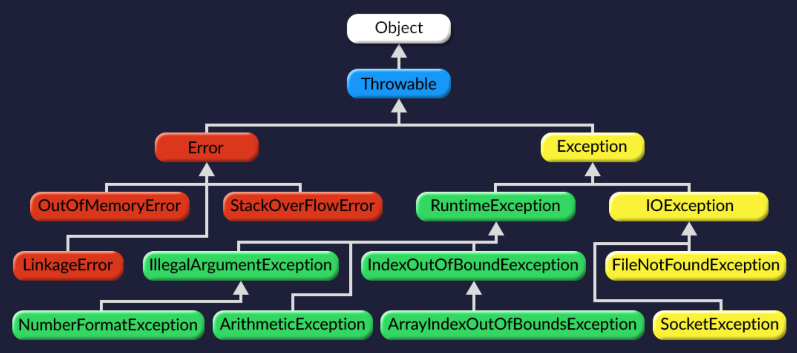

Java
Java является основой практически для всех типов сетевых приложений и всеобщим стандартом для разработки и распространения встроенных и мобильных приложений (андроид), игр, веб-контента и корпоративного программного обеспечения. В мире насчитывается более 9 миллионов специалистов, разрабатывающих приложения на Java, которая позволяет эффективно разрабатывать, внедрять и использовать превосходные приложения и услуги.
От портативных компьютеров до центров сбора данных, от игровых консолей до суперкомпьютеров, используемых для научных разработок, от сотовых телефонов до сети Интернет — Java используется повсюду!
- Java используется на 97% корпоративных настольных ПК
- 9 млн разработчиков на Java в мире
- Инструмент номер 1 среди разработчиков
- Java используется в 3 млрд мобильных телефонов
Java как язык и платформа
Говоря о Java следует четко разграничивать два понятия: язык программирования и платформа.
- Java как язык программирования является высокоуровневым, статически-типизированным и объектно-ориентированным.
- Java как платформа - это программное обеспечение, представляющее собой рабочую среду для работы программ, написанных на Java (и не только).
- hashCode - возвращает уникальный номер объекта. Гарантирует если объекты одинаковые то и hashcode одинаковый, но если объекты разные то hashcode может быть не всегда разным, так как многообразие объектов неограничено, а hashcode ограничен типом int.
- equals - по умолчанию, как и оператор == сравнивает хэшКоды объектов. Но в отличие от ==, equals можно переопределить чтобы метод сравнивал объекты нужным нам способом.
- toString - возвращает имяКласса@хэшКод переведенный в шестнадцатеричную систему.
- getClass - возвращает имя класса.
- clone - создает клон объекта, в отличии от простого присваивания будем иметь свою ссылку на объект.
- wait - бесконечно ждет другой поток, пока не будет вызван метод notify() или notifyAll() на объекте.
- notify - пробуждает только один поток, после чего этот поток начинает выполнение.
- notifyAll - пробуждает все потоки, хотя в какой последовательности они будут пробуждаться зависит от реализации ОС.
- finalize - служит для уничтожения объектов, он вызывается автоматически сборщиком мусора.
- static - ключевое слово которое объявляет переменную или метод общим для всех экземпляров класса и соответственно хранит ее в единственном экземпляре.
- finaly - ключевое слово делает переменную константой. Метод помеченный finaly нельзя будет переопределить в классе наследнике. Если класс помечен finaly, то от него нельзя наследоваться.
- this В каждый метод неявно передается ссылка на объект, у которого этот метод вызывают. Переменная, которая хранит эту ссылку, называется this. Таким образом, метод всегда может получить данные из своего объекта или вызвать другой метод этого же объекта.
В статический метод вместо ссылки на объект передается null. Поэтому он не может обращаться к нестатическим переменным и методам – у него банально нет ссылки на объект, к которому они привязаны. - super - ключевое слово необходимое подклассу для того чтобы ссылаться на его непосредственного предка.
Также стоит помнить что в иерархии кассов конструкторы вызываются в порядке наследования, начиная с суперкасса и кончая подкассом. - любая система состоит из объектов
- каждый объект имеет состояние и поведение
- объекты взаимодействуют между собой определенным способом
- Инкапсуляция
- Наследование
- Полиморфизм
- try - оборачивает блок кода, в котором необходимо будет поймать исключение.
- catch - если усключение случилось, и в сигнатуре catch это исключение указано, catch ловит, и исполняет свой блок кода. Если нет – то блок кода catch не выполняется.
- finaly - независимо есть ли у нас блоки catch или нет, было ли поймано исключение или не было, если написано блок finaly, мы всегда будем в него попадать. Finaly вызвается ВСЕГДА, даже если перед ним был return. Finaly нужен для того чтобы корректно завершить работу, например закрыть потоки inPut.close() и outPut.close().
- throw - команда для того чтобы в ручную бросать исключение в блоке кода, например:
throw new RunTimeException() - throws - указывает в сигнатуре метода какие исключения нужно ловить, но он никак их не орабатывает в отличие от try/ catch, он пробрасывает исключение дальше(в метод к на уровень выше, где был вызван данный метод).
JDK (Java Development Kit) - стандартный набор библиотек и инструментов для для создания, компилирования и дебага программ. Включает в себя стандартные библиотеки классов Java, примеры, документацию, различные утилиты и исполнительную систему Java (JRE).
JRE (Java Runtime Environment) - минимальная реализация виртуальной машины, необходимая для исполнения Java-приложений, без компилятора и других средств разработки. Состоит из виртуальной машины — JVM и библиотеки Java-классов.
JVM (Java Virtual Machine) - виртуальная машина Java исполняет байт-код Java, предварительно созданный из исходного текста Java-программы компилятором Java (javac).
JVM интерпретирует Java-программы. Она не интерпретирует напрямую исходный Java код, вместо этого java код должен быть скомпилирован в .class файлы (или байт-код), формат которых не является удобным для чтения человеком, но это и не машинный код. Технически байт-код - это промежуточный язык, или Intermediate language. По сути своей байт код представляет собой цикл, с огромным свитчем который в зависимсоти от условий выполняет элементарные команды.
Возникает логичный вопрос: что же связывает язык Java с JVM. И ответ на этот вопрос - .class файлы, в которые компилируется исходный код Java.
В этом и причина успеха java, мы пишем под одно устройство JVM. А саму JVM му уже устанавливаем на разные платформы, таким образом обеспечивая мультиплатформенность.
Java EE, SE, ME - это наборы библиотек, для разработки под различные цели.
Java SE (Standart Edition) - набор библиотек для десктопных приложений.
Java ME (Mobile Edition) - полумертвый (потому что появился андроид) набор для мобильных приложений.
Java EE ( Enterprise Edition) - набор библиотек, для крупных веб-приложений.
Object
Object – базовый клас который является родительским классом для все объектов java, соответственно все любые объекты в java хранят всего лишь ссылки на объекты которые хранятся в памяти. А ссылки занимают всего 4 байта.
У класса Object 9 публичных методов, которые неявно наследуют все объекты в java.
Кострукторы и finalize
Конструктор - это метод класса, который инициализирует новый объект после его создания. Имя конструктора всегда совпадает с именем класса, в котором он расположен. У конструкторов нет типа возвращаемого результата - никакого, даже void. В классе можно определить несколько конструкторо инициализирующих разные поля, а можно не определить ни одного, тогда будет использоваться неявные конструктор по умолчанию.
finalize - метод, обратный методу-конструктору. Этот методы вызывается у объекта когда сборщик мусора понимает что ссылок на объект больше нет. По умолчанию он пустой и не явный. Но мы можем его добавить специально
Ключевые слова
ООП
Объектно-ориентированное программирование (ООП) — методология программирования, основанная на представлении программы в виде совокупности объектов, каждый из которых является экземпляром определенного класса, а классы образуют иерархию наследования.
Главные аспекты:
Принципы ООП
Инкапсуляция - (сокрытие реализации) механизм, благодаря которому пользователь класса может взаимодействовать с объектам только заранее определёнными способами и не видит реализации этих способов. Сводит к минимуму количество связей между частями системы, тем самым, упрощая изменение классов. Все поля которые используются внутри класса должны быть приватными, а доступ к ним, если нужно должен осуществляться через геттеры и сеттеры проходя возможно какую то валидацию.
Наследование - создание одного класса с помощью другого с использованием всех свойств и методов, добавляя новые свойства и методы при необходимости. . В твоем классе появятся все поля и все методы класса-родителя. Наследуемый класс называется суперклассом, а наследующий – подклассом.
Полиморфизм - механизм, позволяющий работать с родственными объектами одинаковым образом, но которые имеют различную реализацию.
Интерфейсы и Абстрактные классы
Интрефейс - это описание полей и методов без их реализации. Хотя в java 8 стало возможным реализация методов по умолчанию. Для бъявления интерфейса необходимо указать ключевое слово interface.
В Java пришли к компромиссу – запретили множественное наследование классов, но разрешили множественную реализацию интерфейсов. Интерфейс может иметь несколько интерфейсов-родителей. Итак, интерфейс по сути указывает какие методы должы быть реализованы, но не указывает «КАК» они должны быть реализованы. Все методы интерфейса являются public. Интерфейсы сильно упрощают жизнь программиста. Очень часто в программе тысячи объектов, сотни классов и всего пара десятков интерфейсов – ролей. Ролей мало, а их комбинаций – классов – очень много. Весь смысл в том, что тебе не нужно писать код для взаимодействия со всеми классами. Тебе достаточно взаимодействовать с их ролями (интерфейсами). И класс и интерфейс могут наследоваться от нескольких интерфейсов.
Самое главное в интерфейсах, то что можно создать переменную с типом интерфейса. С помощью такой переменной можно ссылаться на любой экземпляр класса реализующего этот интерфейса – это и есть полиморфизм.
Также в java 8 в интерфейсах можно реализовывать один default метод, и еще можно обьявлять статические методы.
Абстрактный класс может содержать как реализованные методы, как и обычный класс, так и нереализованные, как интерфейс. Как и при наследовании другие классы могут наследоваться от абстрактного командой extends. Создавать объекты абстрактного класса нельзя. Такой код не скомпилируется. При наследовании своего класса от абстрактного, нужно реализовать все унаследованные абстрактные методы. Иначе такой класс тоже придется объявить абстрактным. Унаследоваться можно только от одного абстрактного класса. Также асбтарктные классы могут содержать в себе методы с реализацией.
В итоге, главным отличием интерфейса от абстрактного класса это то что интерфейс задает только поведение, а абстрактный класс может хранить состояние.
Исключения
Исключение - проблема, из-за которой нормальное продолжение работы метода, выполняющегося в данный момент, становится невозможным. Когда возникает ошибка, Java-машина создаёт специальный объект – exception – исключение, в который записывается вся информация об ошибке. Для разных ошибок есть разные исключения. Затем это «исключение» приводит к тому, что программа тут же выходит из текущей функции, затем выходит из следующей функции, и так пока не выйдет из метода main. Затем программа завершается. Чтобы программа не завершалась нужно уметь перехватывать эти исключения. Исключения позволяют вам остановить программу и сообщить о возникших трудностях.
Throwable - корневой класс иерархии исключений. Обычно для разных типов ошибок возбуждаются разные типы исключений. Информация о случившейся ошибке как содержится внутри объекта исключения, так и указывается косвенно в самом типе этого объекта, чтобы кто-то на более высоком уровне сумел выяснить, как поступить с исключением.
Checked (желтые) это такие исключения которые мы должны обработать самостоятельно, которые могут вознкнуть при ненахождении загружаемого файла или при прерывании потока. Обработку таких исключений мы должны заранее предусмотреть в коде.
Unchecked (зеленые) это такие исключения которые возникают внезапно, в процессе работы программы, заранее предугадать их трудно, но можно также обрабатывать.
Обработка исключений
Создание исключений
Ваш выбор не ограничивается использованием уже существующих в Java исключений. Иерархия исключений JDK не может предусмотреть все возможные ошибки, поэтому вы вправе создавать собственные типы исключений для обозначения специфических ошибок вашей программы. Для создания собственного класса исключения вам придется определить его производным от уже существующего типа (наследоваться можно только от Exception или RuntimeExceprion) — желательно наиболее близкого к вашей ситуации (хоть это и не всегда возможно). Каждое название исключения должно заканчиваться на Exception.
Java IO (ввод/вывод)
InputStream и OutputStream – это два асбтракных класса, которые задают общую модель входных и выходных потоков байт. С помощью них можно читать и писать данные в консоль, файл или интернет. Важный момент они позволяют читать/писать данные последовательно и один раз. Всё java IO построено на двух паттернах: Adapter и Decorator. (Например ByteInputStream это адаптер, он адаптирует массив байтов к InputStream).
Для чтений и записи файлов есть два класса: FileInputStream и FileOutputStream (которые реализуют интерфейс InputStream и OutputStream). FileInputStream позволяет последовательно читать из файла байты, а FileOutputStream – записывать в файл байты.
Вот как выглядит код копирования [данных одного] файла в другой.
BufferInputSream
Благодаря буферизации «клиенты» могут читать данные из буфера маленькими порциями, а буфер, чтобы сэкономить время и силы, читает их из источника большими порциями.
Класс BufferedInputStream – классический представитель обертки-буфера. Он – класс-обертка над InputStream. При чтении данных из него, он читает их из оригинального InputStream’а большими порциями в буфер, а потом отдает из буфера потихоньку.
Серилизация
Это процесс сохранения состояния объекта (в файл, JSON, XML и др) для удобной передачи или хранения. Обычно это нужно для сохранений в играх, или передачи в виде JSON между фронтом и бэком, или пердачи в виде XML в SOAP сервисах.
Но не все объекты можно сериализовать. Чтобы серилизовать объект его поля не должны содержать ссылок на другие объекты. Чтобы пометить класс, объекты которого можно сериализовать, то нужно в при объявлении класса указать что он реализует интерфейс Serializable, что является по сути просто отметкой о сериализации, так как интерфейс Serializable не содержит никаких методов.
Externalizable – это тоже интерфейс для сериализации как Serializable, только он в себе содержит названия методов для реализации экстренной серилизации и десирилизации.
transient - ключевое слово, которым помечается поле класса, которое не нужно учитывать при сериализации.
Для удобной серидизации придумали несколько библиотек. Jackson – для серилизации в JSON. JAXB и Marshall – для серилизации в XML.
Дженерики <T> и wildcards <? super Cat>
Дженерик – это переменная для типа, которая указывается при написании класса (например используется при написании оеализаций коллекций).
То есть если мы пишем класс, который может работать с разными классами, неизвестными на момент написания кода, мы можем указать дженерик в виде заглавной букы, Например <T>. Или мы можем ограничить круг объектов с которомы мы можем работать указав, например <T extends Cat>. То есть наш класс будет работать только с наследниками Cat.
Wildcards – это специальная конструкция, которая указывает возможность передачи класса работающего с дженериками. Например:
public void test (List<?> list) – можно передать в качестве аргумента лист любых объектов.
public void test (List<? extends Cat> list) – можно передать в качестве аргумента лист только экземпляры и наследники класса Cat
public void test (List<? super Cat> list) – только классы родители Cat
Java Beans
- POJO (Plain Old Java Object) – обычный Java-объект.
- DTO (Data Transfer Object) – объект, который используют только для пересылки данных. Создал объект, записал в него нужные данные из бизнес-логики, сериализовал в JSON/XML и отправил куда-надо и наоборот.
- Entity - это объект, который хранится в базе данных. Не содержат никакой бизнес-логики, только данные.
- DAO (Data Access Object) — объект который сохраняет Entity -объекты в базу и доставает их из нее.